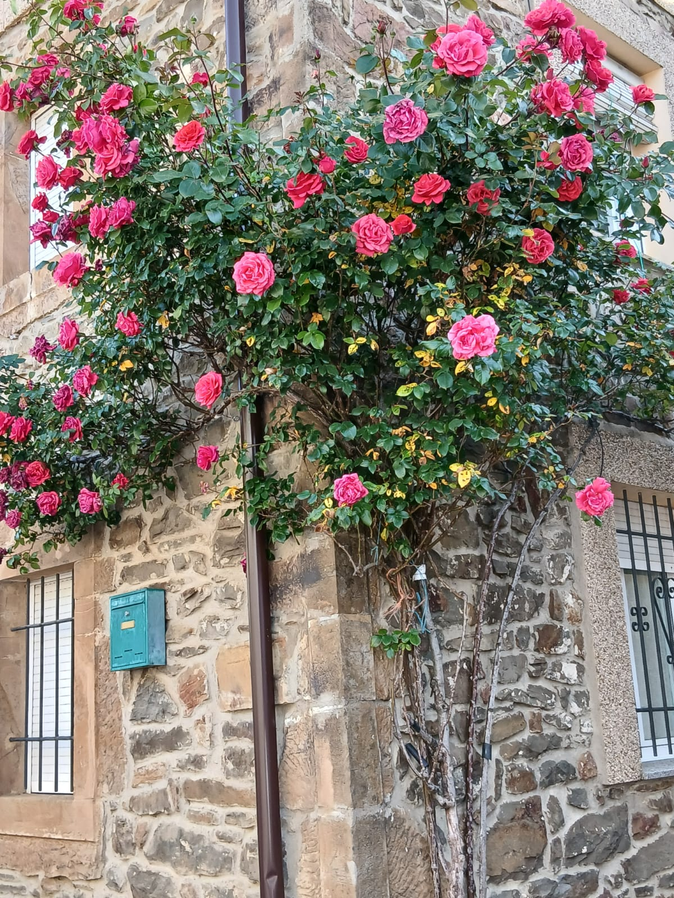
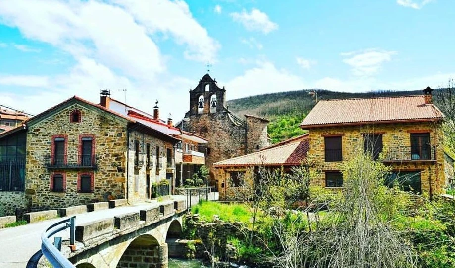

🚗
Miércoles 19 de agosto
🌙 Tarde / Noche
Salida hacia Morgovejo
Sobre las 17:00 h partimos hacia Morgovejo. Preparamos todo y nos ponemos rumbo a León.
🕚 Llegada prevista sobre las 23:30 h.
📍 Ver ubicación

